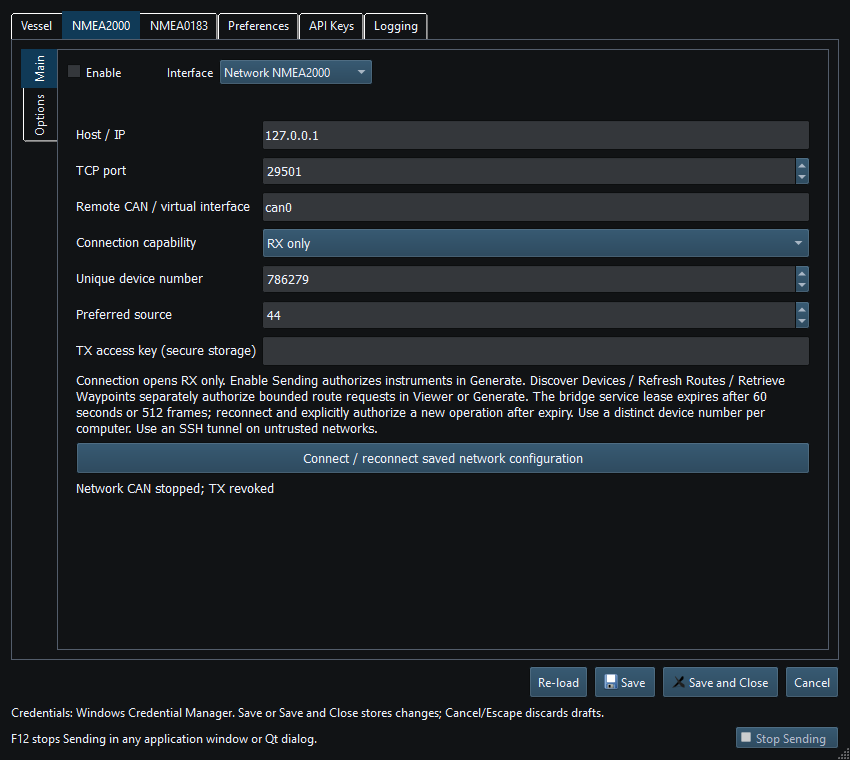
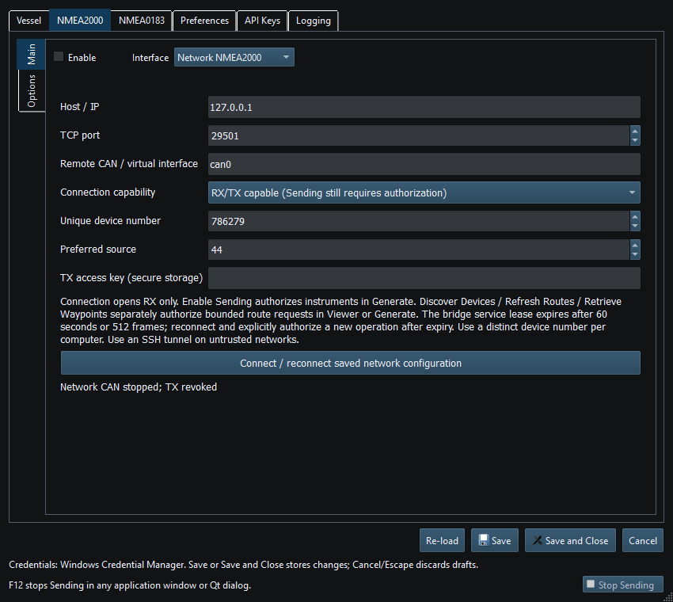

Network NMEA2000 connects the application to the standalone Linux RayNetworkBridge SocketCAN TCP bridge using the existing RN2K/1 session protocol. It is not a transparent arbitrary two-network gateway.
The Linux host needs Python 3.9+, iproute2 and an already configured healthy CAN interface. The bridge does not choose bitrate, raise can0 or install startup services. Its default bind is loopback. Configure the bridge interface, bind/port, allowed client IPs and a protected random access-key file. Do not expose the listener directly to the Internet.
For an untrusted network, use an authenticated tunnel. A typical SSH forwarding pattern is ssh -N -L 29501:127.0.0.1:29501 user@linux-host with the bridge bound/allowlisted for loopback; configure the client for 127.0.0.1:29501. Replace placeholders with authorized host details. Keep bridge service configuration separate from client connection settings.
Each connection starts RX-only. Read its status in Setup and the main window. After a fault or disconnection, reconnect deliberately and authorize output again when ready.
Enable Sending grants ordinary instrument output in Generate, subject to current readiness and instrument Enable. Discover/Refresh/Retrieve in the route dialog instead authorize a bounded read-only route-service session. Clean service completion or cancellation returns to RX-only. Mode/configuration changes, disconnect and Stop/F12 revoke the relevant authorization.
HMAC authorizes TX without sending the shared key itself, but the transport is not TLS; CAN identities and traffic are visible without a tunnel/trusted LAN. IP allowlisting applies to RX too. A duplicate NAME from another participant revokes the affected TX session; fix identity conflicts instead of defeating the guard.
Use a compatible Axiom route service when retrieving chartplotter routes. For local simulation without a CAN interface, the bridge also supports virtual buses; choose the bus matching your intended connection.
Reading guide: Host/port and remote interface identify the bridge endpoint. Connection capability is separate from the TX access key and later per-session authorization. Connect/reconnect uses saved configuration.

Figure 65. Network NMEA2000 host, port, interface and access settings in Setup. Click to enlarge.

Figure 66. RX/TX-capable network configuration is separate from explicit instrument Sending and route-service authorization. Click to enlarge.
NMEA2000 Overview · NMEA0183 Overview · SocketCAN · CANable SLCAN · Waveshare USB-CAN-A · Actisense NGT-1 · Signal K · Device Discovery and Diagnostics · Connection Troubleshooting · Enable, Dispatch and Sending · Route Overview · Engineering Units